大家好，我是杨鼎睿，这一次给大家带来的是 API Server 的源码阅读。包括之前的 etcd 源码阅读，整个 API Server 共 109 张源码及源码图，文章最后有 API Server 系列目录。欢迎大家的阅读。
本文研究了 CRD 部分的源码，配备源码进行进一步理解，可以加深理解,增强相关设计能力。
ResourceConfig
Default Configuration
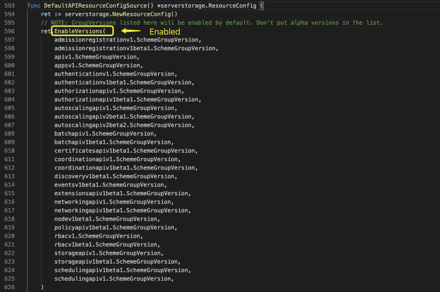
开启的资源配置及禁用的版本
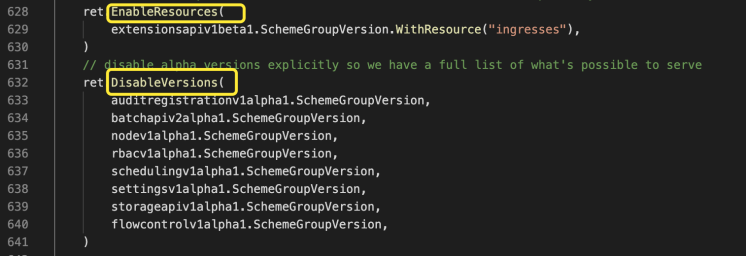
Extend
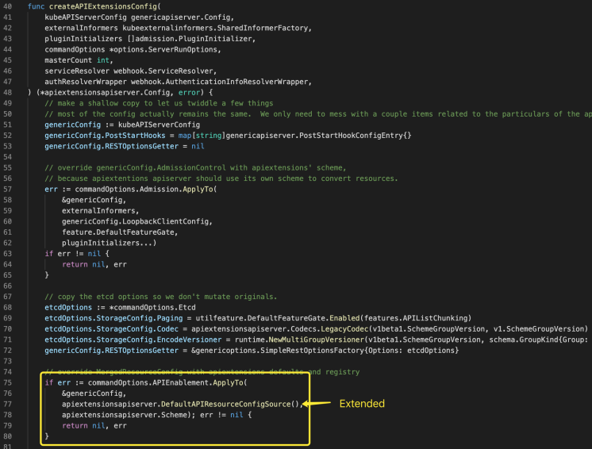
开启选型如下
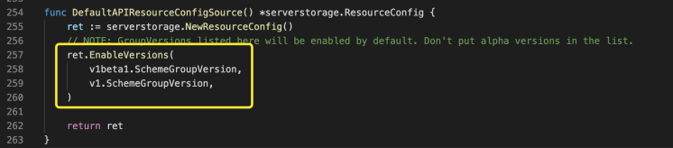
Runtime Support
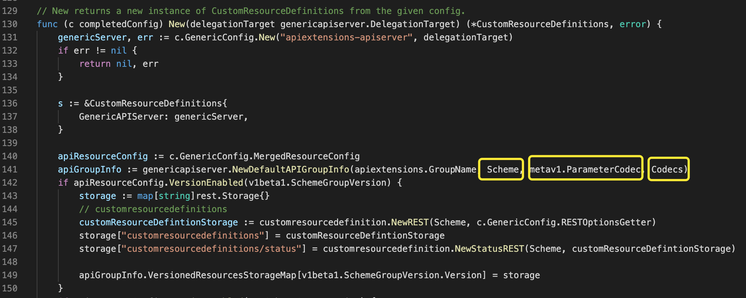
三者如下图所示
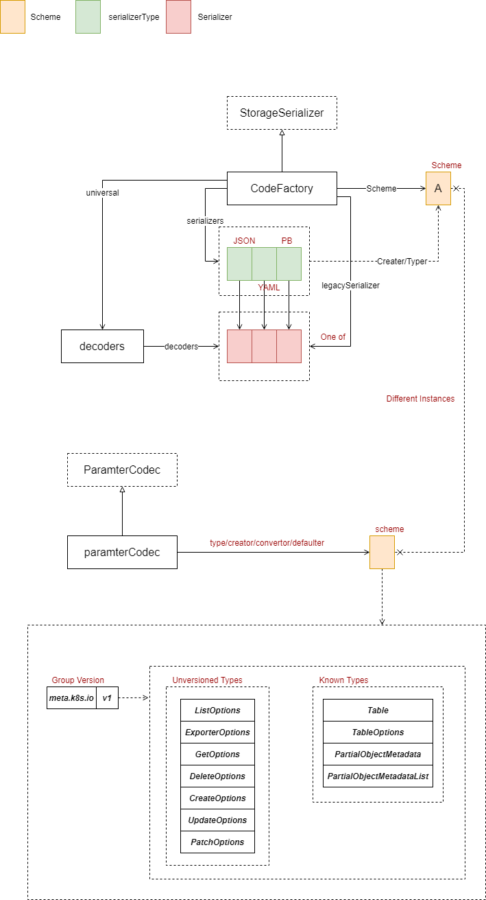
Storage
Custom Resource Definitions
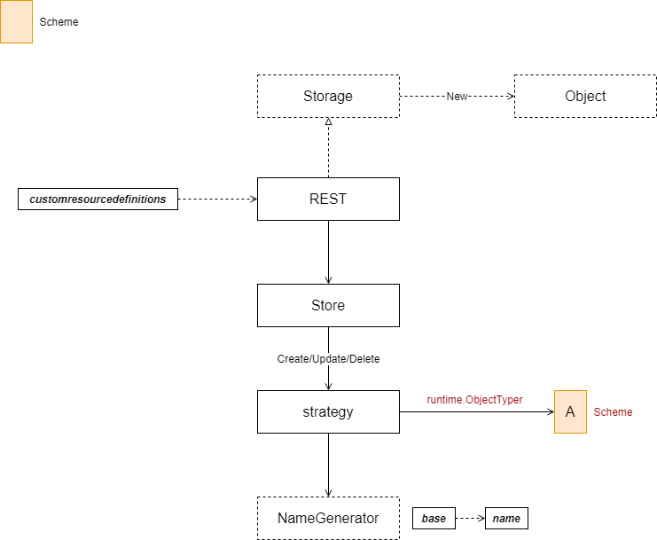
Store 展开后如下图所示
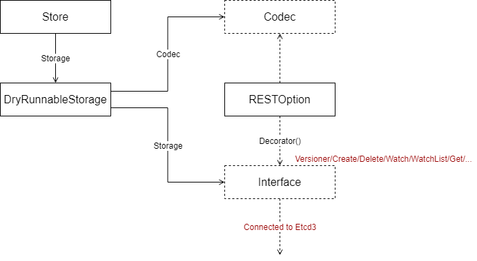
State Transition
Landscape
SharedInformerFactory 用于创建 SharedIndexInformer，后者会周期性的使用 Clientset 连接版本为 v1beta1 或 v1 的 API Extension Services，获取到状态变更后，通知各自的 ResourceEventHandler。在此，还有一些问题需要深入挖掘：
- SharedInformerFactory 如何区分不同类型的资源状态变更
- ResourceEventHandler 是否能同时关注不同类型资源状态的变更
- 资源状态变更是如何获取到的
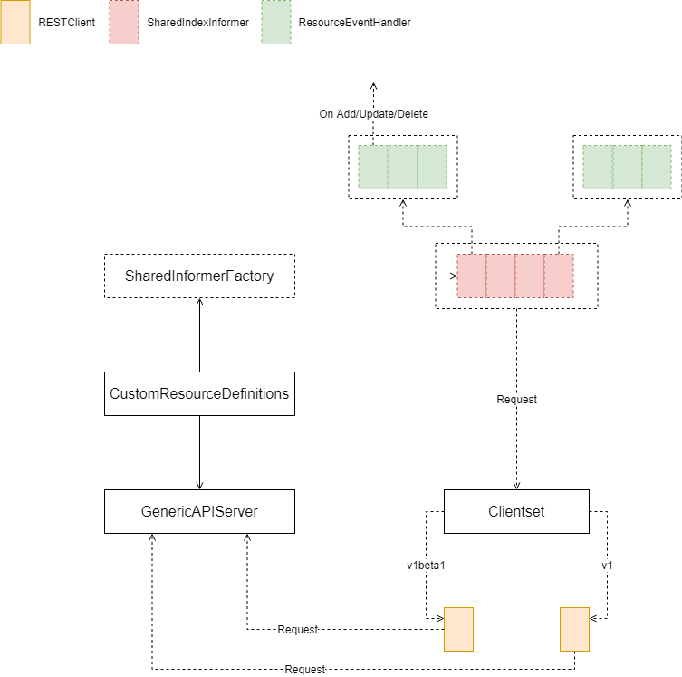
Clientset
Clientset 功能相对简单，将可用的 API Extension Services 进行封装，每个 RESTClient 都连接在 “Loopback” 地址上，并向不同的服务发送请求。
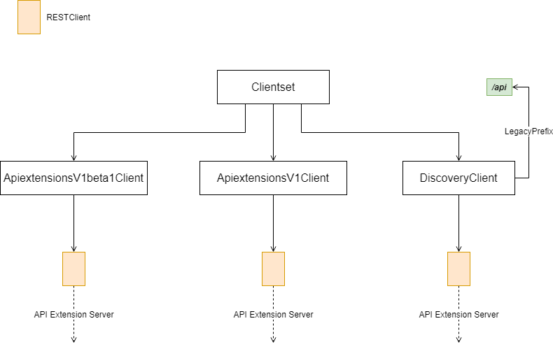
SharedInformerFactory
Relationship
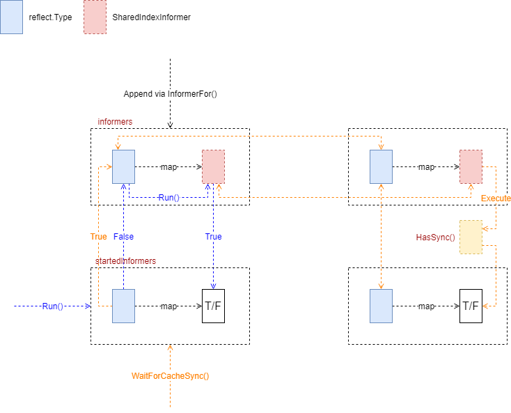
Add Informers
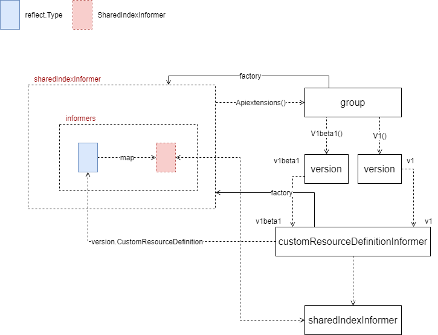
Management
EstablishingController
EstablishingController 启动后，会启动一个定时执行任务，这个任务每秒检查队列里是否有新的 Key 值，如果有，则更新 Server 端对应资源状态为 Established。
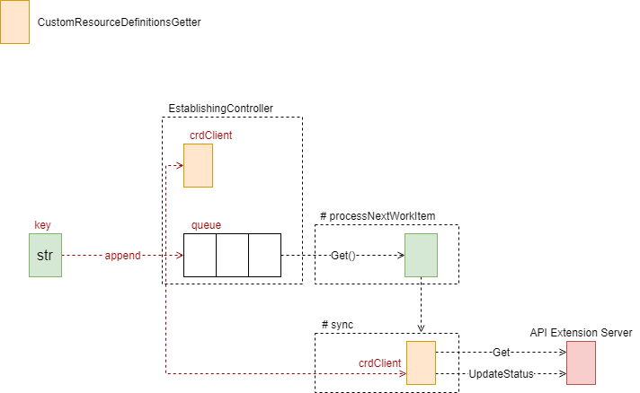
sync 代码如下
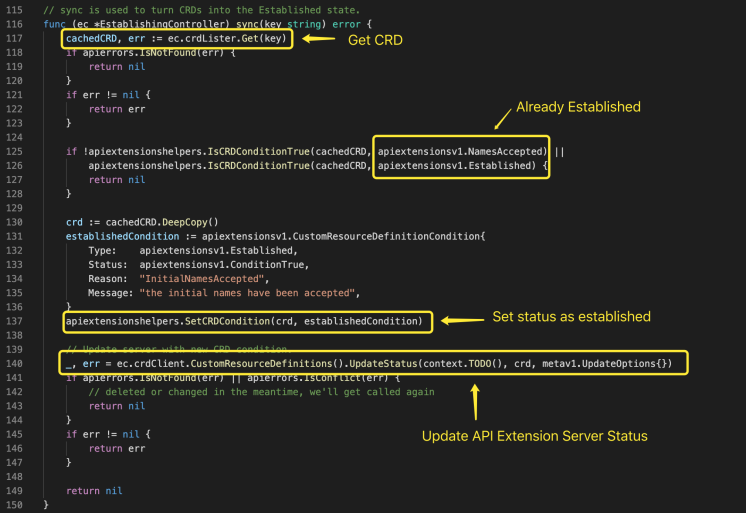
CRD Handler
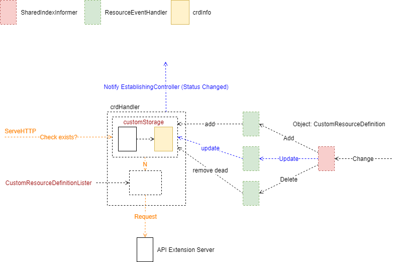
CRD Handler 向 SharedIndexInformer 注册事件处理，Watch 的对象类型 Update 时，则有可能是状态变为 Established 状态，需要向 EstablingController 发送。
CRD Handler 处理请求时，首先检查缓存是否包含请求对象，如果有，返回缓存对象；如果没有，则向 Server 请求，并更改缓存状态。
CRD Controller
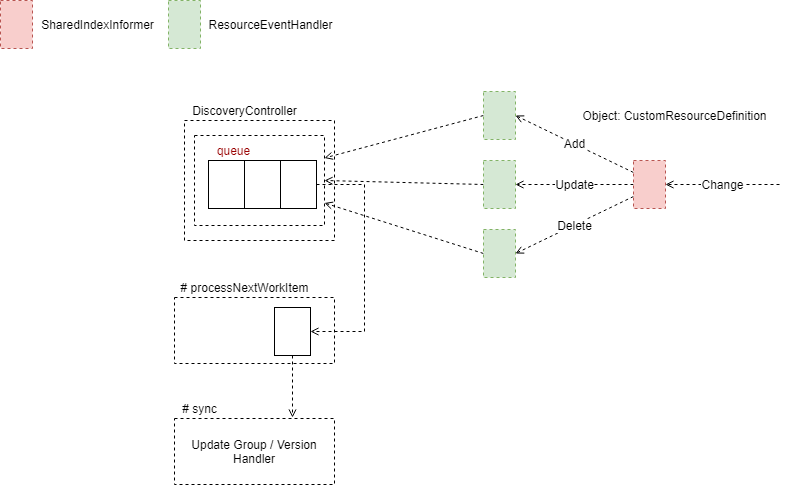
[3] API Server